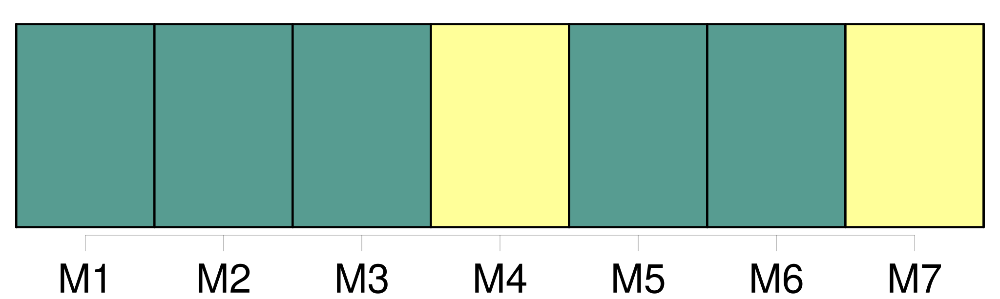

Longueur nb maillons : 19 mentions |
  |
Lorsqu'il n'aura pas existé de registres, ou qu'ils seront perdus, la preuve en sera reçue tant par titres que par témoins ; et dans ces cas, les mariages, [naissances] et décès, pourront être prouvés tant par les registres et papiers émanés des pères et mères décédés, que par témoins. [17 phrases]
Des actes de [naissance] [1 phrases]
Les déclarations de [naissance] seront faites dans les trois jours de l'accouchement, à l'officier de l'état civil du lieu : l'enfant lui sera présenté. [1 phrases]
[La naissance de l'enfant] sera déclarée par le père, ou à défaut du père, par les docteurs en médecine ou en chirurgie sages-femmes, officiers de santé ou autres personnes qui auront assisté à l'accouchement ; et lorsque la mère sera accouchée hors de son domicile, par la personne chez qui elle sera accouchée.
L'acte de [naissance] sera rédigé de suite, en présence de deux témoins. [1 phrases]
L'acte de [naissance] énoncera le jour, l'heure et le lieu de [la naissance] le sexe de l'enfant, et les prénoms qui lui seront donnés, les prénoms, noms, profession et domicile des père et mère, et ceux des témoins. [5 phrases] S'il naît un enfant pendant un voyage de mer, l'acte de [naissance] sera dressé dans les vingt quatre heures en présence du père, s'il est présent et de deux témoins pris parmi les officiers du bâtiment, ou, à leur défaut, parmi les hommes de l'équipage. [1 phrases]
L'acte de [naissance] sera inscrit à la suite du rôle d'équipage. [1 phrases]
Au premier port où le bâtiment abordera, soit de relâche, soit pour toute autre cause que celle de son désarmement, les officiers de l'administration de la marine, capitaine maître ou patron, seront tenus de déposer deux expéditions authentiques des actes de [naissance] qu'ils auront rédigés, savoir, dans un port français au bureau du préposé à l'inscription maritime ; et dans un port étranger, entre les mains du commissaire des relations commerciales. [2 phrases]
À l'arrivée du bâtiment dans le port du désarmement, le rôle d'équipage sera déposé au bureau du préposé à l'inscription maritime, qui enverra une expédition de l'acte de [naissance] , de lui signée, à l'officier de l'état civil du domicile du père de l'enfant, ou de la mère, si le père est inconnu : cette expédition sera inscrite de suite sur les registres. [1 phrases]
L'acte de reconnaissance d'un enfant sera inscrit sur ks registres, à sa date ; et il en sera fait mention en marge de l'acte de [naissance] , s'il en existe un. [20 phrases] L'officier de l'état civil se fera remettre l'acte de [naissance] de chacun des futurs époux. [6 phrases]
Le tribunal, après avoir entendu le commissaire du Gouvernement, donnera ou refusera son homologation, selon qu'il trouvera suffisantes ou insuffisantes les déclarations des témoins, et les causes qui empêchent de rapporter l'acte de [naissance] [10 phrases]
Les prénoms, noms, professions, âge, lieux de [naissance] et domiciles des époux ; [23 phrases]
Lorsqu'il y aura des signes ou indices de mort violente, ou d'autres circonstances qui donneront lieu de le soupçonner, on ne pourra faire l'inhumation qu'après qu'un officier de police, assisté d'un docteur en médecine ou en chirurgie, aura dressé procès-verbal de l'état du cadavre, et des circonstances y relatives, ainsi que des renseignemens qu'il aura pu recueillir sur les prénoms, nom, âge, profession, lieu de [naissance] et domicile de la personne décédée. [27 phrases]
Les déclarations de [naissance] à l'armée seront faites dans les dix jours qui suivront l'accouchement. [1 phrases]
L'officier chargé de la tenue du registre de l'état civil devra, dans les dix jours qui suivront l'inscription d'un acte, de [naissance] audit registre, en adresser un extrait à l'officier de l'état civil du dernier domicile du père de l'enfant, ou de la mère si le père est inconnu. [260 phrases]
Si néanmoins, dans le cas des articles 194 et 195, il existe des enfans issus de deux individus qui ont vécu publiquement comme mari et femme, et qui soient tous deux décédés, la légitimité des enfans ne peut être contestée sous le seul prétexte du défaut de représentation de l'acte de célébration, toutes les fois que cette légitimité est prouvée par une possession d'état qui n'est point contredite par l'acte de [naissance] |
La ressource peut être téléchargée sur la page Ortolang
Si vous avez des questions ou vous voyez des erreurs, merci d'envoyer un mail à silvia.federzoni89@gmail.com
Site développé par S. Federzoni (contact)